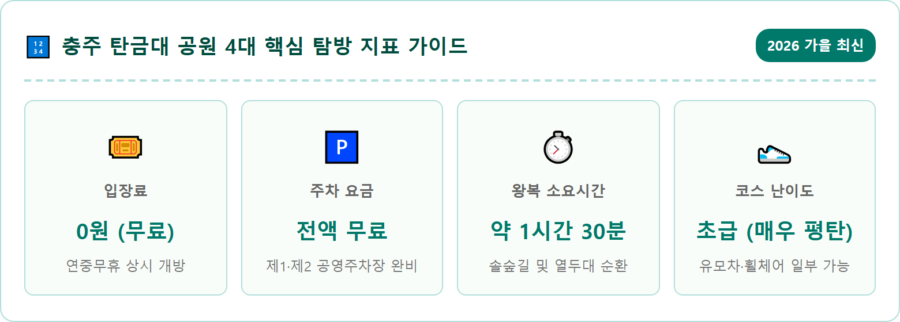
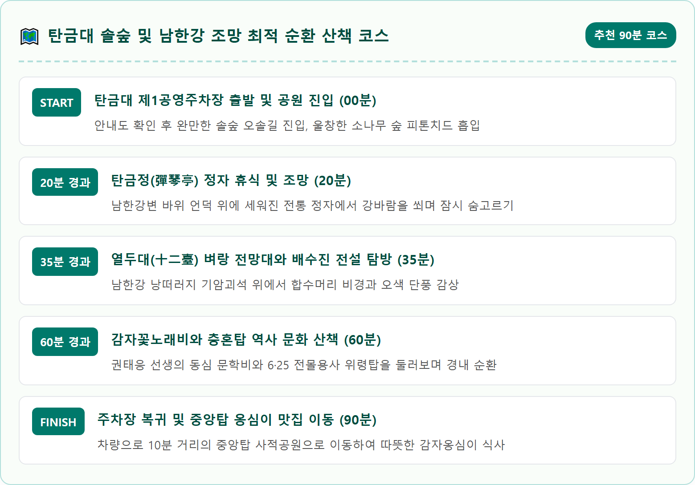
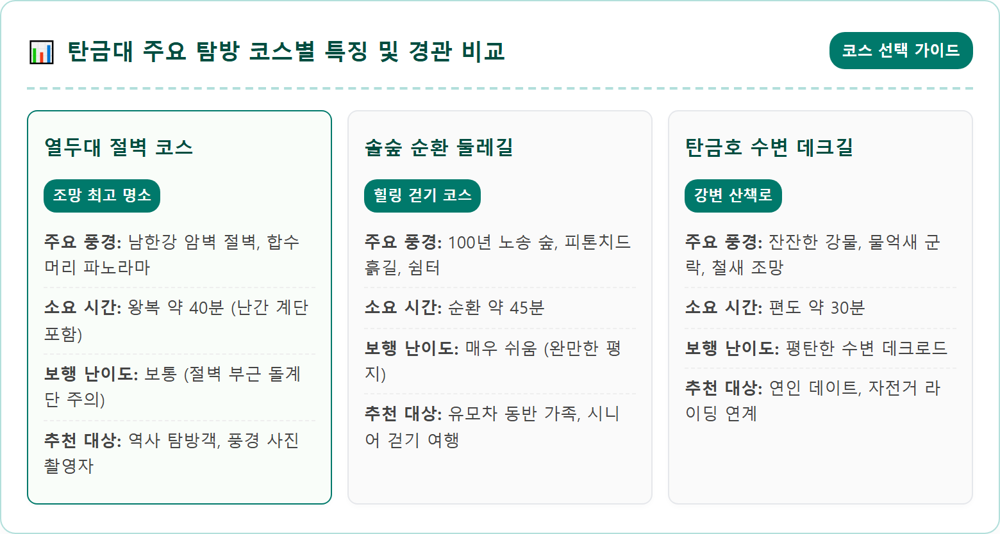
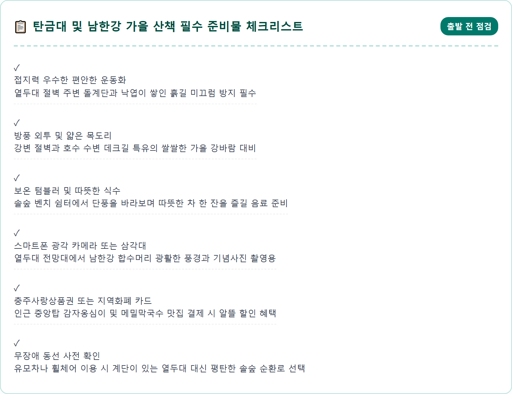
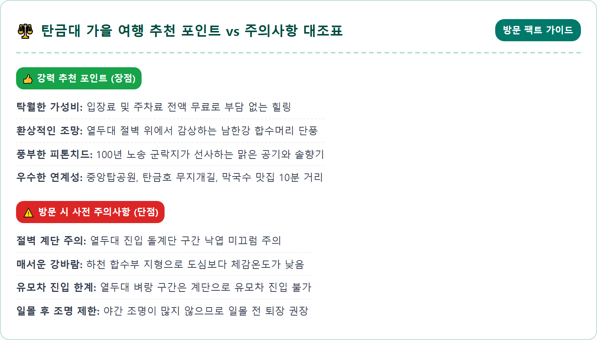
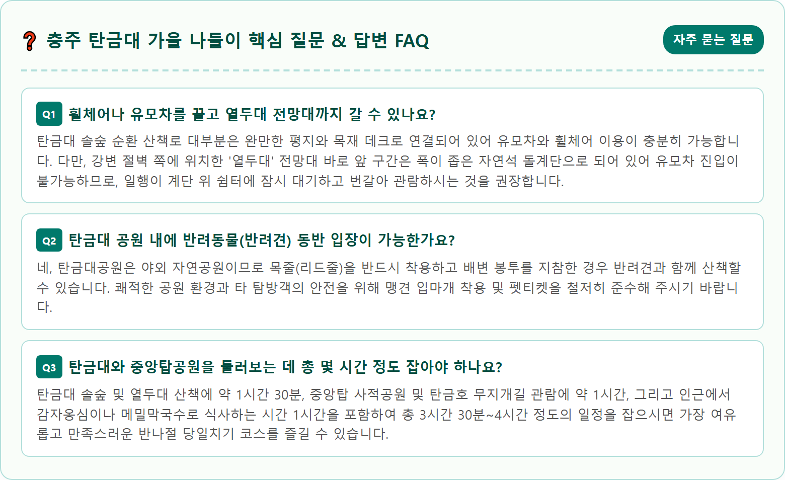

A picturesque autumn scenery of Tangeumdae in Chungju, South Korea. A serene walking trail winding through a tall, dense Korean pine forest with golden needles scattered on the ground. Sunlight filters softly through the canopy onto a traditional wooden gazebo resting beside a dramatic granite cliff called Yeoldudae overlooking the scenic Namhan River. Vibrant autumn foliage in red, amber, and orange coats the rocky bluffs and river valley. Photorealistic, 8k resolution, cinematic lighting, ultra-detailed landscape, natural daylight.

충청북도 충주시 칠금동에 자리 잡은 탄금대(彈琴臺)는 우리나라 고대 음악사의 중심 인물인 악성 우륵(于勒)의 숨결이 살아 숨 쉬는 곳입니다. 대가야가 신라에 병합될 무렵, 신라 진흥왕은 가야의 훌륭한 악사였던 우륵을 맞아들여 이곳 국원성(현재의 충주)에 안치하고 음악을 연주하도록 하였습니다. 우륵은 남한강의 푸른 물줄기와 기암괴석이 어우러진 경치에 반해 매일 바위 위에 앉아 열두 줄 가야금을 뜯으며 나라 잃은 망국의 한과 예술적 영혼을 선율로 승화시켰고, 이로 인해 '가야금을 연주하던 누대'라는 뜻의 '탄금대'라는 아름다운 이름이 붙여지게 되었습니다.
늦가을 11월에 접어들면 탄금대는 울창한 노송 숲과 주변 활엽수가 빚어내는 오색 단풍이 어우러져 한 폭의 진경산수화를 완성합니다. 수령 100년을 훌쩍 넘긴 키 큰 소나무들이 숲을 빽빽하게 메우고 있어, 숲길에 들어서는 순간 상쾌하고 짙은 피톤치드 향기가 온몸을 감쌉니다. 바스락거리는 솔잎과 갈참나무 낙엽을 밟으며 걷다 보면 도시의 번잡함에서 벗어나 고요한 자연 속에서 오롯이 사색에 잠길 수 있습니다.
탄금대는 단순한 자연공원에 머무르지 않고 역사와 문학, 그리고 호국의 비장미가 층층이 겹쳐진 명소입니다. 남한강 절벽을 휘감아 도는 강바람을 맞으며 산책로를 거닐면 오랜 세월 동안 이 바위를 스쳐 지나간 수많은 사람들의 이야기가 귓가에 맴도는 듯한 특별한 정취를 경험할 수 있습니다.
충주 탄금대는 충주시 도심과 가까운 남한강변에 위치해 있어 자가용은 물론 대중교통을 이용한 접근성이 매우 우수합니다. 공원 입구에는 '탄금대 제1공영주차장'과 '제2공영주차장'이 마련되어 있으며, 주차 대수는 약 150대 이상을 수용할 수 있습니다. 주차 요금은 연중 내내 전액 무료로 운영되고 있어 시간 제약 없이 여유롭게 산책을 즐길 수 있는 커다란 장점이 있습니다.
주말이나 가을 행락철 단풍 피크 시간대(오전 11시~오후 2시)에는 제1주차장이 일시적으로 혼잡할 수 있으나, 공원 초입의 제2주차장이나 인근 충주세계무술공원 공영주차장과도 도보로 연결되어 있어 주차 공간을 찾는 데 큰 어려움은 없습니다. 전기차 충전 구역도 정비되어 있어 친환경차 이용자들도 편리하게 충전 후 산책에 나설 수 있습니다.
대중교통을 이용해 방문할 경우, KTX 중부내륙선과 충북선이 정차하는 충주역이나 충주공용버스터미널에서 탄금대행 시내버스가 수시로 운행합니다. 충주역 광장에서 400번대 또는 500번대 시내버스를 탑승하면 약 15~20분 만에 탄금대 입구 정류장에 도착할 수 있습니다. 택시를 이용하더라도 편도 6,000~8,000원 선의 요금으로 10분 이내에 도착할 수 있어 당일치기 뚜벅이 여행 코스로도 손색이 없습니다.

탄금대 산책로의 가장 깊은 곳, 강변 쪽으로 튀어나온 거대한 바위 절벽 위에 서면 탄금대 최고의 절경이자 비극적인 호국의 역사가 깃든 '열두대(十二臺)'에 다다르게 됩니다. 열두대는 남한강과 달천강이 만나는 합수머리 절벽 위에 우뚝 솟아 있어, 아래를 내려다보면 푸른 강물과 깎아지른 바위 낭떠러지가 아찔한 스릴과 함께 웅장한 감동을 선사합니다.
이곳 열두대라는 명칭에는 1592년 임진왜란 당시 도순변사 신립(申砬) 장군의 비장한 전설이 전해져 내려옵니다. 파죽지세로 북진하던 왜군 고니시 유키나가의 2만 대군을 맞이하여, 신립 장군은 천혜의 요새인 조령(문경새재)을 포기하고 기마부대의 기동력을 살리기 위해 탄금대 평야에 배수진(背水陣)을 쳤습니다. 강을 등지고 물러설 곳 없는 결전을 벌였으나 왜군의 조총 부대와 젖은 진흙 논바닥에 기병이 갇히며 아군은 궤멸적인 타격을 입었습니다.
치열한 백병전 속에서 신립 장군은 활시위가 너무 뜨거워져 식히기 위해 이 바위 절벽을 열두 번이나 오르내렸다고 하여 '열두대'라는 이름이 붙었다고 전해집니다. 결국 패전을 확인한 신립 장군은 부하 장수와 함께 강물에 투신하여 장렬하게 순국하였습니다. 지금은 안전한 난간과 조망 데크가 설치되어 있어 평화로운 가을 강 풍경을 한눈에 담을 수 있지만, 바위 벼랑 아래로 굽이치는 강물을 바라보면 조국을 지키고자 했던 선열들의 비장함이 묵직한 울림으로 다가옵니다.
열두대에서 바라보는 강변 뷰가 가슴을 탁 트이게 한다면, 탄금대 능선을 따라 조성된 소나무 숲길은 마음을 차분하게 가라앉히는 힐링의 공간입니다. 탄금대공원 일대에는 약 3만 평에 달하는 넓은 부지에 100년 안팎의 자생 적송들이 군락을 이루고 있습니다. 곧게 뻗은 소나무 줄기 사이로 늦가을 오후의 부드러운 햇살이 스며들며 몽환적인 숲의 풍경을 연출합니다.
솔숲 오솔길은 경사가 매우 완만하여 체력이 약한 어르신이나 어린아이들도 숨이 차지 않고 편안하게 걸을 수 있습니다. 흙길 구간도 단단하게 다져져 있으며, 비가 온 뒤에도 질퍽거리지 않도록 야자 매트와 목재 데크가 구간마다 꼼꼼하게 설치되어 있습니다. 솔바람이 불어올 때마다 사각거리는 나뭇가지 소리와 솔잎 향기가 어우러져 천연 아로마테라피를 즐기는 기분을 만끽할 수 있습니다.
숲길 곳곳에는 잠시 쉬어갈 수 있는 벤치와 통나무 쉼터가 넉넉하게 배치되어 있어, 보온병에 담아온 따뜻한 차 한 잔을 마시며 늦가을의 정취를 음미하기에 완벽합니다. 햇볕이 잘 드는 양지바른 숲길에는 붉은 단풍나무와 샛노란 은행나무가 솔숲과 조화를 이루어 멋진 인생 사진을 남길 수 있는 천연 포토존을 형성합니다.

탄금대 공원 내부를 찬찬히 걷다 보면 자연스럽게 충주가 낳은 대표적인 민족시인이자 아동문학가인 권태응(權泰應) 선생의 문학적 자취를 마주하게 됩니다. 솔숲 한편에 정갈하게 자리 잡은 '감자꽃노래비'는 선생의 대표 동시인 '감자꽃'을 기리기 위해 1968년 건립된 문학비입니다. "자주 꽃 핀 건 자주 감자, 파보나 마나 자주 감자. 하얀 꽃 핀 건 하얀 감자, 파보나 마나 하얀 감자"라는 소박하면서도 일제강점기 민족의 정체성을 노래한 친근한 시구가 화강암 비석에 아로새겨져 있습니다.
아이들과 함께 방문했다면 이 노래비 앞에서 교과서에 실린 동시를 함께 낭독하며 소박하고 진실한 우리 문학의 가치를 되새겨보는 뜻깊은 교육의 시간을 가질 수 있습니다. 감자꽃노래비 주변은 키 큰 활엽수들이 포근하게 감싸고 있어 가을 낙엽이 카펫처럼 깔려 더욱 운치 있는 정취를 풍깁니다.
공원 중심부 언덕에는 6·25 한국전쟁 당시 충주 지구 전투에서 산화한 호국영령들을 추모하는 거대한 충혼탑과 위령비가 단정하게 서 있습니다. 매년 현충일마다 위령제가 열리는 이곳은 깔끔하게 정돈된 잔디광장과 거대한 조각상이 어우러져 경건한 추모의 마음을 불러일으킵니다. 탄금대는 이처럼 신라의 예술, 조선의 충절, 현대의 호국과 순수 문학이 하나의 공간 안에서 조화롭게 숨 쉬고 있는 소중한 문화유산의 보고입니다.
탄금대 산책을 여유롭게 마쳤다면, 남한강 하류를 따라 차로 약 7~10분 거리에 위치한 '중앙탑 사적공원'과 '탄금호 무지개길'로 드라이브 코스를 이어가는 것을 강력히 추천합니다. 탄금호 무지개길은 2013 충주세계조정선수권대회 당시 설치된 수변 중계 도로를 리모델링하여 시민들에게 개방한 부유식 수변 보행교로, 총연장 1.4km에 달하는 긴 데크길이 호수 수면 위에 그림처럼 떠 있습니다.
낮에는 잔잔한 호수 수면 위로 푸른 하늘과 주변 가을 산자락의 단풍 그림자가 반사되어 마치 물 위를 걷는 듯한 황홀한 기분을 선사하며, 호숫가를 따라 피어난 은빛 물억새가 늦가을 정취를 극대화합니다. 해가 지고 어둠이 깔리면 데크길 난간을 따라 무지개색 화려한 LED 조명이 켜져 낭만적인 야경 산책 코스로 변모하며, 한국관광공사의 야간관광 100선에도 선정될 만큼 빼어난 야경을 자랑합니다.
무지개길 바로 옆에 자리한 중앙탑공원에는 국보 제6호인 '충주 탑평리 칠층석탑(중앙탑)'이 남한강변 평원에 당당하게 서 있습니다. 통일신라 원성왕 때 국토의 정중앙에 세웠다는 유래를 지닌 이 석탑은 높이 14.5m의 웅장한 자태를 뽐내며, 석탑 주변으로 야외 조각공원과 초가집 풍경의 의상 대여소, 충주박물관이 무료로 개방되어 있어 다채로운 볼거리를 제공합니다.

탄금대와 중앙탑공원을 부지런히 걸으며 기분 좋은 늦가을 피로감이 몰려올 때쯤, 충주가 자랑하는 향토 먹거리는 여행의 즐거움을 배가시켜 줍니다. 중앙탑공원 주변에는 메밀과 감자를 주재료로 하는 유명 맛집들이 대규모 음식 거리를 형성하고 있습니다. 그중에서도 늦가을 쌀쌀한 날씨에 가장 인기를 끄는 메뉴는 단연 뜨끈하고 걸쭉한 국물이 일품인 '감자옹심이 메밀칼국수'입니다.
강원도와 충북 북부의 청정 감자를 강판에 직접 갈아 수분을 짜내고 가라앉힌 전분으로 빚어낸 옹심이는 투명하면서도 씹을수록 차지고 쫀득한 식감이 일품입니다. 구수하게 우려낸 멸치 다시마 육수에 들깻가루와 메밀면이 어우러져, 국물 한 숟가락을 넘기는 순간 차가워진 속이 사르르 풀리며 든든한 포만감을 안겨줍니다. 취향에 따라 바삭하게 부쳐낸 메밀배추전이나 매콤달콤한 메밀비빔막국수를 곁들이면 완벽한 미식 궁합을 이룹니다.
식사를 마친 후에는 전국 최고의 당도와 아삭함을 자랑하는 충주 특산품 '충주사과'로 만든 디저트를 놓치지 마세요. 중앙탑 인근 카페와 베이커리에서는 새콤달콤한 사과 과육이 듬뿍 들어간 충주 사과빵, 사과파이, 그리고 갓 착즙한 신선한 사과주스를 맛볼 수 있습니다. 달콤한 사과 디저트를 손에 들고 호숫가를 거닐며 마시는 커피 한 잔은 충주 가을 여행의 더없는 힐링 포인트입니다.
11월 초순과 중순에 탄금대를 찾을 때는 강변 지형 특유의 기온 변화와 바람에 철저히 대비하는 복장 준비가 필요합니다. 탄금대는 삼면이 남한강과 달천강으로 둘러싸인 하천 돌출부 지형이기 때문에 도심보다 체감온도가 2~3도 이상 낮고, 강에서 불어오는 강바람이 꽤나 매섭습니다. 낮 기온이 포근하더라도 바람을 효과적으로 막아줄 수 있는 방풍 기능의 경량 패딩이나 윈드브레이커를 착용하는 것이 좋습니다.
산책로 자체는 완만한 흙길과 데크로 잘 정돈되어 있으나, 열두대 절벽으로 내려가는 마지막 구간은 바위를 깎아 만든 좁은 돌계단으로 이루어져 있습니다. 특히 늦가을에는 바위 표면에 마른 낙엽이나 서리가 내려앉아 순간적으로 미끄러질 위험이 있으므로, 밑창의 마찰력이 좋은 트레킹화나 편안한 운동화를 필히 착용해야 합니다. 구두나 미끄러운 플랫슈즈는 낙상 사고의 원인이 될 수 있으므로 피하시기 바랍니다.
일몰 시간 이후에 방문할 계획이라면 기온이 급격히 떨어지므로 얇은 장갑과 목도리를 챙기시고, 탄금대 숲길 내부는 가로등 조명이 최소화되어 있어 늦은 저녁 산책 시에는 스마트폰 손전등이나 소형 라이트를 준비하는 것이 안전합니다.

충북 충주 탄금대는 화려함보다는 잔잔함으로, 자극적인 액티비티보다는 깊은 사색과 쉼으로 여행자를 맞이하는 품격 있는 가을 명소입니다. 1,400여 년 전 우륵의 가야금 소리가 남한강 물결을 타고 흐르던 그 자리에서, 붉게 물든 단풍과 푸른 소나무가 만들어내는 자연의 하모니는 일상의 스트레스와 피로에 지친 현대인들에게 최고의 치유제가 되어 줍니다.
왕복 1시간 반의 호젓한 솔숲길 걷기, 벼랑 끝 열두대에서 마주하는 압도적인 수변 비경, 그리고 이어지는 중앙탑공원 산책과 구수한 감자옹심이 한 그릇까지 이어지는 동선은 이동 거리가 짧고 알차서 당일치기 늦가을 가족 나들이나 연인과의 드라이브 코스로 완벽한 균형을 자랑합니다. 수도권에서 1시간 반 남짓이면 닿을 수 있는 뛰어난 지리적 이점 또한 탄금대를 더욱 매력적으로 만드는 요소입니다.
계절이 겨울의 문턱으로 성큼 다가서는 이 계절, 옷깃을 여미며 소나무 향기 그윽한 탄금대 솔숲길을 천천히 걸어보세요. 고요히 흐르는 남한강 물줄기를 바라보며 늦가을의 낭만과 역사의 향기를 가슴 가득 채워갈 수 있는 뜻깊은 시간이 될 것입니다.
